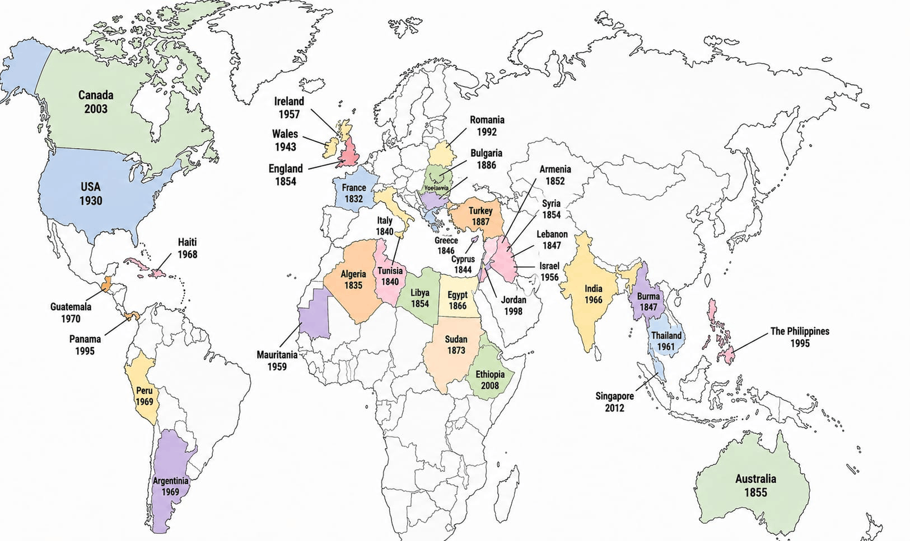

Where we are
Today the Sisters are present in twenty-four countries across Europe, Africa, the Middle East, Asia, Oceania and Latin America. Tap a marker on the map — or a country below — to zoom in and see its communities. Where countries lie too close together to tap apart, one numbered marker stands for the group and opens the countries in it.

Each date is the year of the Congregation's first foundation in that country. Tap a marker to see the communities there today; when zoomed in, drag to move the map and double-tap to return to the world.
Regions of presence